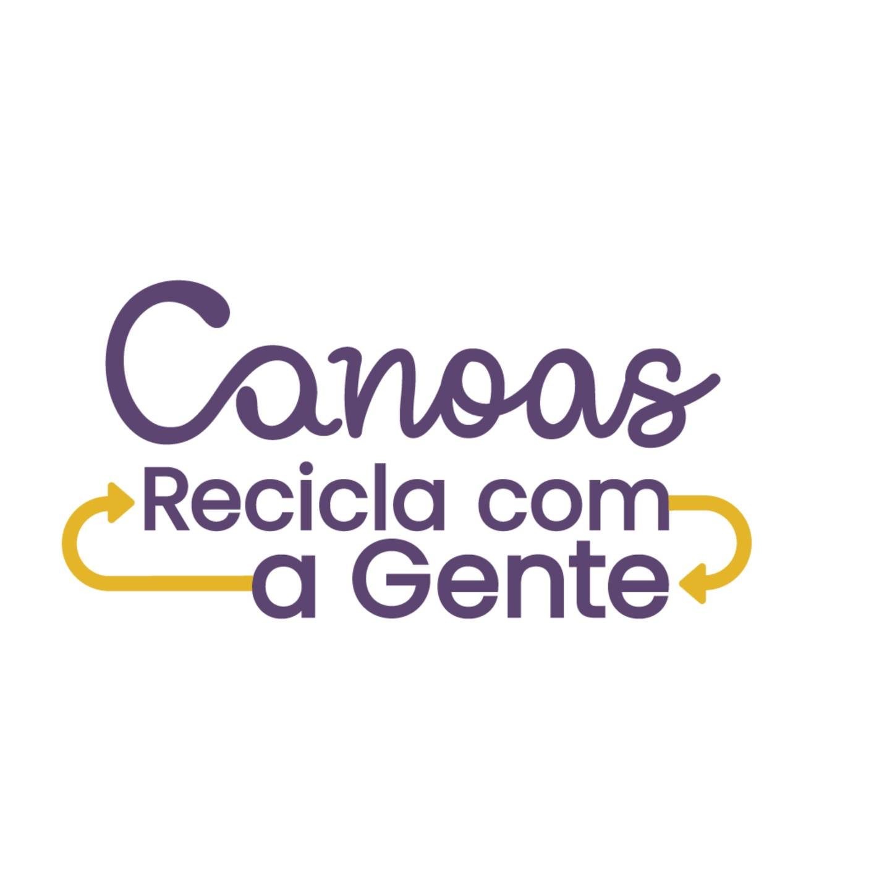

Canoas foi pioneira no país ao contratar cooperativas de catadores e catadoras para realizar a coleta seletiva possibilitando a inclusão de pessoas e fomento da Economia Solidária. O procedimento de separação correta é muito importante para evitar a contaminação dos materiais reaproveitáveis, favorecendo o seu retorno ao ciclo produtivo e diminuindo os custos de reciclagem.
Assim, O projeto Canoas Recicla com a Gente é desenvolvido em parceria entre a Secretaria do Meio Ambiente, as oito cooperativas da cidade - sete cooperativas que realizam a coleta e triagem dos resíduos recicláveis e uma que faz a coleta e reciclagem dos eletroeletrônicos -, a empresa Apoena Socioambiental e a Unilasalle. O objetivo do projeto é sensibilizar a população canoense quanto a correta separação dos resíduos.
* Em um ano de atuação, a iniciativa possibilitou que as cooperativas encaminhassem mais de 3,5 mil toneladas de materiais para a reciclagem.
* Mais de 31 mil pessoas já foram alcançadas por meio de palestras e visitas em condomínios, escolas e empresas, nas ações porta a porta e outros eventos com público.
* Com a reestruturação do serviço de coleta seletiva, ocorrido em 2022, o investimento anual da Prefeitura passou de R$ 3,5 milhões para cerca de R$ 6,9 milhões.

*Cooperativa Amigos e Amigas Solidárias (Cooarlas)
*Cooperativa de Catadores de Material Reciclável de Canoas (Coopcamate)
*Cooperativa de Reciclagem – União Faz a Força (Coopermag)
*Cooperativa Renascer
*Cooperativa Mãos Dadas
*Cooperativa Mato Grande Canoense
*COOPERSOL
*COOPERTEC